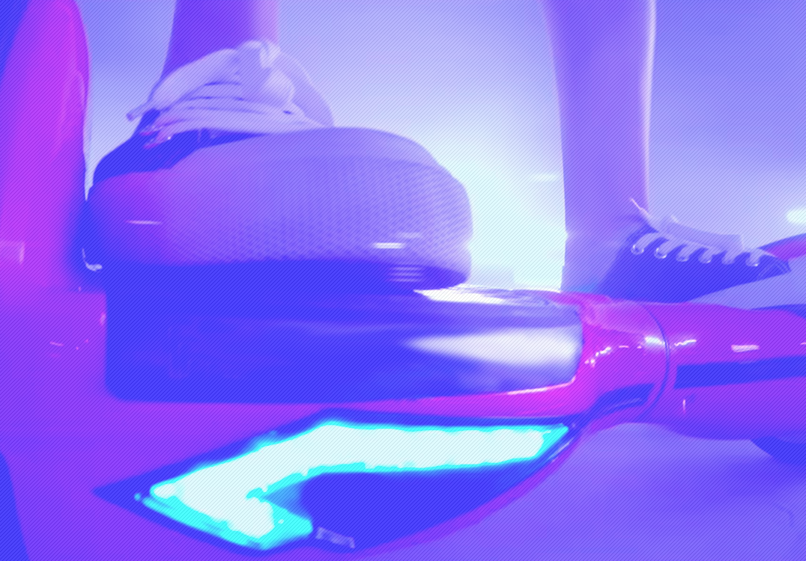
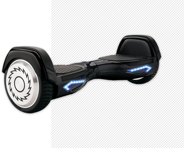
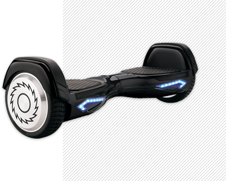

смотреть
Rizor
маневреность, легкость,

Дизайн
Внешний вид скутера дышит
идеями футуризма:
Плавные линии
Подсветка светодиодными
индикаторами
Рельефные бамперы,
оснащенные защитными
панелями
Модель представлена сразу
в нескольких цветах

 

Максимальная скорость
Скоростных режима
При максимально выдерживаемой
нагрузке в 100 кг отлично подойдёт,
как для подрастающего поколения,
так и для более взрослых «наездников».
Это единственный гироскутер со
специальным детским режимом
езды.